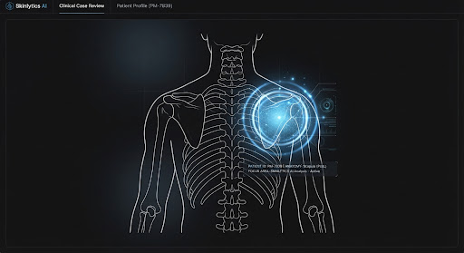
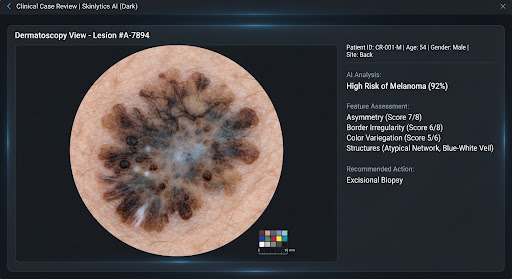
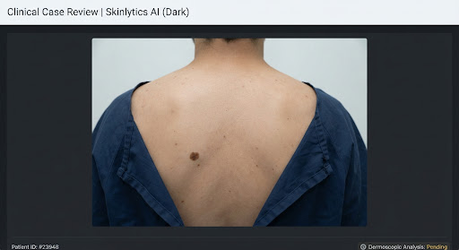

Clinical Case Review | Skinlytics AI (Dark)
Patient: Elena Rodriguez, 34 • Fitzpatrick Type III • History of atypical nevi. Presenting with evolving pigmented lesion on right dorsal scapula.
Area Mapping
zoom_in
Primary Site
Dorsal Scapula (R)
Zone Area
14.2 mm²
Clinical Imaging


Risk Assessment
AI Recommendations
Punch Biopsy Recommended
Based on evolution history and diameter
Schedule 3-Month Follow-up
Compare with baseline images
Automated Observations
Pigment Network Reticulation
Prominent atypical reticular pattern identified in the periphery of the lesion. Structural disruption observed in the superior quadrant.
Vascular Structures
No arborizing telangiectasia or milky-red globule patterns detected. Low vascular activity correlated with standard benign nevi profiles.
Regression Zones
Presence of peppering (gray-blue granules) in the central area suggesting possible partial regression activity.
Physician Notes
Lesion was first noticed by patient 6 months ago. Reports occasional pruritus but no bleeding. Comparison with 2023 imaging (not available in portal) suggests slight expansion of the radial border.
Plan: Excisional biopsy with 2mm margins scheduled for 10/24. Differential diagnosis: Atypical Melanocytic Proliferation vs. Superficial Spreading Melanoma.